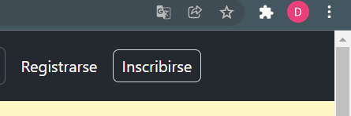
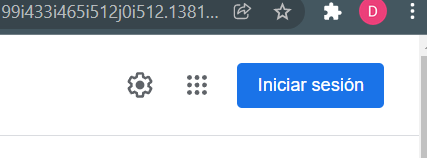

6 NAVEGACIÓN FÁCILMENTE RECORDADA FRENTE A NAVEGACIÓN REDESCUBIERTA.
- ¿Que es?
El título habla por sí solo: lo mejor es no tener que volver a hacer lo mismo siempre. Es decir, es preferible una navegación recordada en vez de una descubierta, ya que el cerebro humano tiene unas limitaciones a la hora de procesar información. Eliminar información redundante, excesiva o innecesaria. Evitar que el usuario tenga que retener información o que tenga que hacer algún esfuerzo mental. Reproducir los modelos y procesos bien conocidos en la Web.Para ello se simplifican las interfaces y la información que da al usuario:
- Eliminar información redundante, excesiva o innecesaria.
- Evitar que el usuario tenga que retener información o que tenga que hacer algún esfuerzo mental.
- Reproducir los modelos y procesos bien conocidos en la Web.
- A la hora de desarrollar una interfaz web se debe procurar que:
- Que la web comunique su propósito.
- Que el usuario esté permanentemente informado de su ubicación.
- Que el sitio web se adapte a ese tipo de usuario.
- Que el usuario tenga el control sobre lo que pasa en el sitio.
- Que el sitio facilite el uso y ayude a prevenir los errores.
- Además de la información útil, que no haya información irrelevante.
- Y por último está el tipo de navegación, que puede ser recordada o redescubierta
Ejemplo:

La primera captura es de GitHub y la segunda de Google. En ambas se ve el botón de “iniciar sesión” y “registrarse” . Están colocadas en el mismo orden, tienen la misma forma, en los dos destaca el botón de la derecha…
Y esto es lo que espera un usuario encontrarse cuando entra a cualquier página, ya que están adaptados a esa interfaz, y podrán moverse de forma más ágil e intuitiva.